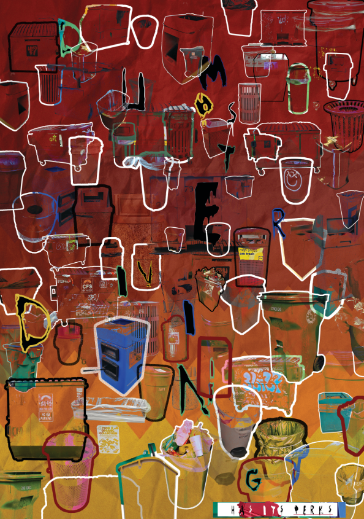

going out into nature, taking pictures of textured items and combining them into strips based on self-ascribed categories for images captured.
inquiries to professor
N/A
strip animation
Core I
Photoshop
finding out how images worked together to form a consecutive story
receiving feedback from peers on strip animation variations
N/A
class book
Core I
Photoshop, InDesign
doing research into fandoms I like
gathering images of people from taking their pictures IRL, or by scouring the "VCU fits" instagram
N/A
glyph animation
Core I
Photoshop (pen tool)
seeing what formations of my objects worked best for the project at hand
referencing previous student works
N/A
type poster project
Core I
Photoshop, InDesign
design elements of font, history behind font and usage
incorporating feedback, seeing how others worked design process
where font was used
posters
Core I
Photoshop, InDesign
finding out what styles worked best for the design topic at hand
referencing past student works, teacher inquiries
N/A
title cards
Core I
AfterEffects, Photoshop, Illustrator
finding best fonts for title cards at hand
deciding on screenshots from video
finding fonts that her music video(s) used
receiving design feedback from instructor
internet culture?
trash poster

Design Practices
Photoshop
taking pictures of 200 trashcans, looking into history of trashcan usage, settling on using trashcans as tools of revolt via lighting on fire.
the process of taking the trashcan pictures (communication with business owners), communication with instructor and other students on direction to take my poster
learning more about the trashcans behind the photos
trash zine
Design Practices
found materials (tie into the essence of "trash")
determining different designs, deciding on shape of trashcan in center
not much research went into this project
communication with instructor and students on direction to take zine, check-ins on progress